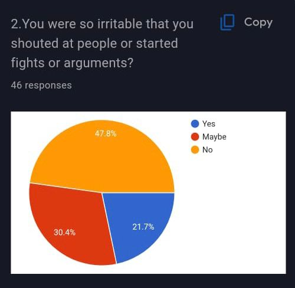
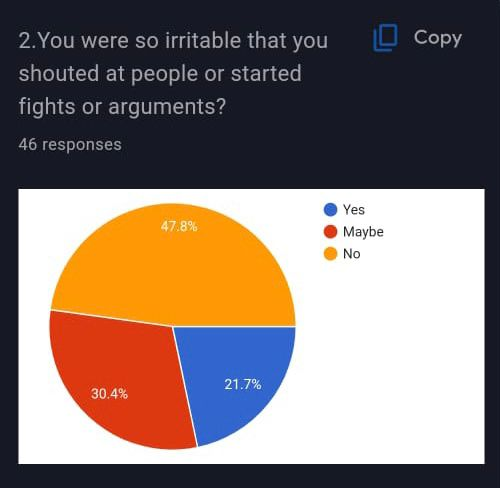

Overview of Bipolar Disorder
Bipolar disorder, also known as manic-depressive illness, is a mental health condition characterized by extreme mood swings. These mood swings includeemotional highs (mania or hypomania) and lows (depression). The periods of mania and depression can vary in intensity and duration, significantly affecting an individual’s quality of life. It is a chronic condition that requires lifelong management.
symptoms
Manic and Hypomanic Episodes
Mania: An episode of mania includes heightened energy, activity, and euphoria or irritability. Symptoms might include:
- Increased activity, energy, or agitation.
- Exaggerated sense of well-being and self-confidence (euphoria).
- Decreased need for sleep.
- Unusual talkativeness.
- Racing thoughts.
- Distractibility.
- Poor decision-making (e.g., spending sprees, risky behavior).
Hypomania: A milder form of mania that is less severe and may not interfere significantly with daily functioning. Symptoms are similar to mania but less intense and shorter in duration.
Depressive Episodes
Symptoms of a depressive episode can be severe and include:
- Depressed mood, such as feeling sad, empty, hopeless, or tearful.
- Markedly diminished interest or pleasure in all, or almost all, activities.
- Significant weight loss when not dieting, weight gain, or decrease or increase in appetite.
- Insomnia or excessive sleeping.
- Fatigue or loss of energy.
- Feelings of worthlessness or excessive or inappropriate guilt.
- Loss ability to think or concentrate, or indecisiveness.
- Recurrent thoughts of death or suicide, or a suicide attempt.
Mixed Episodes
Some individuals experience mixed episodes, which include symptoms of both mania and depression simultaneously. This can be particularly distressing and challenging to manage.
Causes
Genetic Factors
Bipolar disorder tends to run in families, suggesting a genetic component. Multiple genes, rather than a single gene, likely contribute to the risk of developing the disorder.
Biological Differences
Individuals with bipolar disorder may have physical changes in their brains. The significance of these changes is still unclear but may help pinpoint causes.
Neurotransmitter Imbalance
Neurotransmitters, which are brain chemicals involved in mood regulation, may play a role. Imbalances in these chemicals might trigger the condition.
Environmental Factors
Stress, abuse, significant loss, or other traumatic experiences may trigger or exacerbate bipolar disorder, particularly in those with a genetic predisposition.
Diagnosis
Clinical Evaluation
Diagnosis involves a thorough clinical evaluation, including a detailed psychiatric history and assessment of symptoms. It often requires input from family or close associates.
Diagnostic Criteria
The DSM-5 (Diagnostic and Statistical Manual of Mental Disorders) provides criteria for diagnosing bipolar disorder. This includes specific patterns and durations of manic, hypomanic, and depressive episodes.
Differential Diagnosis
It’s crucial to distinguish bipolar disorder from other mental health conditions such as major depressive disorder, borderline personality disorder, and schizoaffective disorder, which may have overlapping symptoms.
Additional Assessments
Physical examinations and laboratory tests may be conducted to rule out other conditions that might mimic bipolar disorder, such as thyroid disorders or neurological conditions.
Types of Bipolar Disorder
Bipolar I Disorder
Characterized by at least one manic episode, which may be preceded or followed by hypomanic or major depressive episodes.
Bipolar II Disorder
Defined by a pattern of depressive episodes and hypomanic episodes, but no full-blown manic episodes.
Cyclothymic Disorder
A milder form involving periods of hypomanic symptoms and periods of depressive symptoms lasting for at least two years (one year in children and adolescents), but not meeting the criteria for a hypomanic episode and a major depressive episode.
Other Specified and Unspecified Bipolar Disorders
Includes bipolar symptoms that do not match the criteria for the above categories but still cause significant distress or impairment.
Treatment
Medication
- Mood Stabilizers: Such as lithium, are commonly used to control mood swings.
- Antipsychotics: Medications like olanzapine or risperidone can help manage symptoms of mania.
- Antidepressants: Used cautiously, often in combination with a mood stabilizer, to treat depressive episodes.
- Anticonvulsants: Such as valproate and lamotrigine, also serve as mood stabilizers.
Psychotherapy
- Cognitive Behavioral Therapy (CBT): Helps individuals understand and change negative thought patterns and behaviors.
- Psychoeducation: Involves teaching patients about their condition, which helps them recognize early signs of relapse and seek timely intervention.
- Family Therapy: Engages family members to improve communication, support, and problem-solving skills.
Lifestyle and Home Remedies
- Routine: Establishing a regular daily routine for sleeping, eating, and activities.
- Sleep: Prioritizing good sleep hygiene to prevent mood swings.
- Healthy Diet and Exercise: Regular physical activity and a balanced diet can help manage symptoms.
- Avoiding Substance Abuse: Alcohol and drugs can exacerbate symptoms and interfere with medications.
Support and Self-Care
- Support Groups: Joining support groups where individuals can share experiences and coping strategies.
- Stress Management: Techniques such as mindfulness, meditation, and yoga can reduce stress and stabilize mood.
- Education: Learning as much as possible about the disorder to manage symptoms effectively.
Coping with Bipolar Disorder
Managing Triggers
Identifying and avoiding triggers such as stress, lack of sleep, or substance abuse is crucial.
Building a Support System
Relying on friends, family, and support groups for emotional support and encouragement.
Monitoring Symptoms
Keeping a mood chart to track symptoms, triggers, and medication effects can help in managing the disorder.
Professional Help
Regular follow-ups with a mental health professional are essential to monitor and adjust treatment as necessary.
Summary
Bipolar disorder is a complex and multifaceted mental health condition characterized by extreme mood swings between mania and depression. Its causes are a combination of genetic, biological, and environmental factors. Diagnosis is based on a thorough clinical evaluation, often complicated by the need to differentiate from other psychiatric conditions. Effective treatment typically involves a combination of medication, psychotherapy, and lifestyle adjustments. Managing bipolar disorder requires continuous monitoring and a strong support system to help individuals lead stable and productive lives. With proper treatment and self-care, many individuals with bipolar disorder can manage their symptoms and achieve significant improvements in their quality of life.
 
